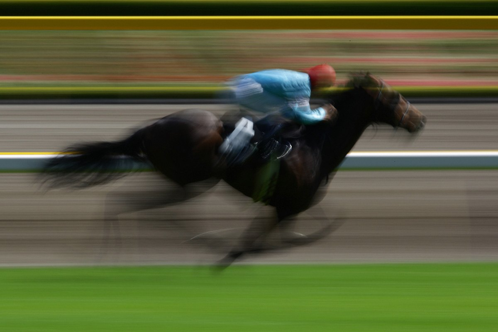
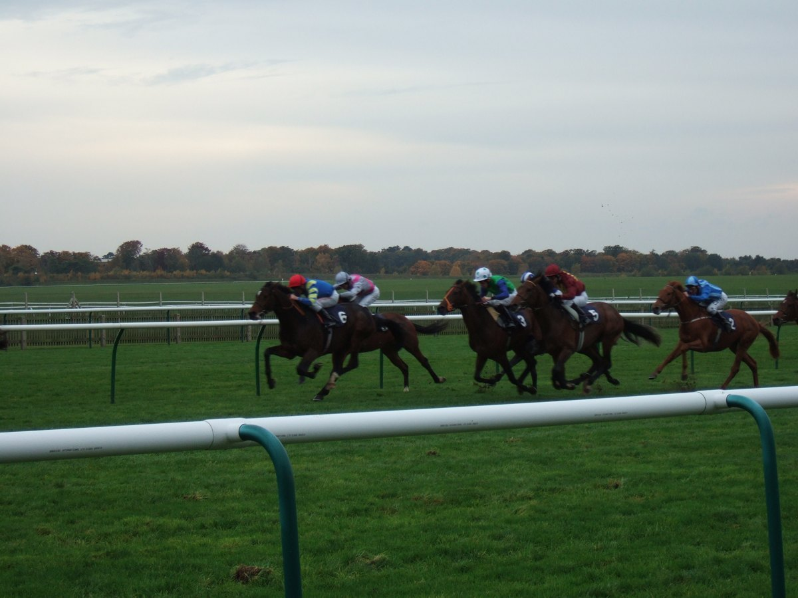

Noxとよへ侍、外れ方まで学習するAI競馬実験
競馬の流れをデータに彫り込んで、次の仮説を出す。
馬の気持ちは直接は読めません。だから、血統、近走、相手関係、馬場、脚質、斤量、オッズ、前回AIが外した理由を ひとつずつ観察値に変換します。次回は北九州記念で、AIが人気に寄りすぎる癖を修正できるかを見ます。

NEXT
7/5 北九州記念 15:45 小倉芝1200m
予想前に彫り込むデータ層
北九州記念は1996年以降の結果と、2010年以降の小倉芝1200m重賞の流れを参照。高速決着と平坦適性を重く見る。
2023年以降は前走1着馬が優勢。前走2着以下だけで買い上げる馬は、別の強い理由が必要。
脚質、前走距離、馬体重、斤量、血統の短距離適性を点にする。気持ちは測れないので、調教・馬体・レース間隔で代替する。
6/28は中穴を拾ったのに順位を上げきれなかった。今回は二桁オッズの前走勝ち馬を必ず上位候補に残す。
次回検証: 北九州記念
G3
テレビ西日本賞 北九州記念
2026年7月5日 / 小倉芝1200m / ハンデ / 15:45発走予定
現時点のAI紙上買い候補
参照: JRA開催日程 / netkeiba北九州記念特集 / ウマニティ重賞データ
今回の予測ルール
デアヴェローチェ、フリッカージャブ、サウンドモリアーナ、ランフォーヴァウをまず上位母集団に置く。
前回のファウストラーゼン取り逃がし対策。サウンドモリアーナ、ランフォーヴァウ、アブキールベイを残す。
フリッカージャブは能力上位でも、2倍台なら紙上単勝の旨味は薄い。買い候補は別枠にする。
枠順、馬場、斤量、最終追い切り、当日オッズを入れたら、印は変えていい。固定しないのが今回のルール。
AI比較
AI A
能力・近走重視| 印 | 馬 | 根拠 | 注意 |
|---|---|---|---|
| ◎ | デアヴェローチェ | 葵S勝ち / 1200m適性 | 古馬初対戦 |
| ○ | フリッカージャブ | 鞍馬S勝ち / 平坦適性 | 低オッズ |
| ▲ | アンクルクロス | 1200m組 / 条件合う | 前走2着以下 |
| △ | ヨシノイースター | 過去2年2着の因縁 | 8歳 / 距離ローテ |
| 保留 | ヤマニンアルリフラ | 昨年覇者 | 近走負け |
VS
AI B
期待値・中穴重視| 印 | 馬 | 根拠 | 注意 |
|---|---|---|---|
| ◎ | サウンドモリアーナ | 前走1200m勝ち / 14倍想定 | 相手強化 |
| ○ | ランフォーヴァウ | 前走勝ち / 23倍想定 | 1200m替わり |
| ▲ | アメリカンビキニ | 前走勝ち / 17倍想定 | 芝適性確認 |
| △ | アブキールベイ | 昨年3着 / 25倍想定 | 前走大敗 |
| 押さえ | デアヴェローチェ | 能力は上位 | 妙味薄め |
成長中のAIデータ
今回取り込んだ材料
歴史30年
近年傾向3年
登録馬13頭
前回からの修正
中穴昇格
低オッズ減点
外れ方保存
次の上書き条件
- 枠順
- 待ち内外差
- 馬場
- 待ち高速/荒れ
- 公式オッズ
- 待ち期待値
1レースごとの検証フロー
- STEP 1履歴を入れる
- STEP 2特性を読む
- STEP 3相手関係
- STEP 4環境確認
- STEP 5AI比較
- STEP 6結果で更新
研究ログ

馬の気持ちは、観察できる代理指標に変える
気配、輸送、間隔、馬体、調教、騎手コメントを点にして、読めない部分を読める形へ寄せる。
拾った穴を上位にできなかった問題
6/28はファウストラーゼンを△で拾ったのに7位扱い。今回は中穴昇格ルールを入れる。
短距離血統と平坦小倉の相性を見る
1200mで前に行けるスピード、平坦で止まらない持続力、母系の短距離色を別々に記録。
枠順・馬場・時計で最終印を変える
北九州記念は高速決着が多い。雨や荒れ馬場になったら、スピードだけの評価を下げる。